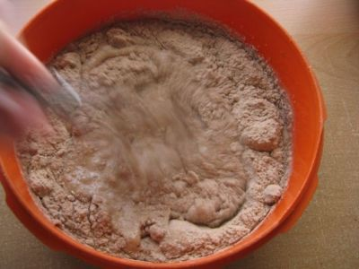
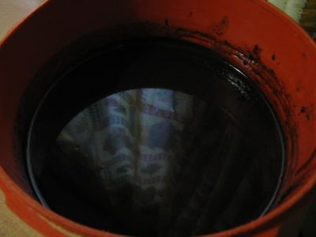
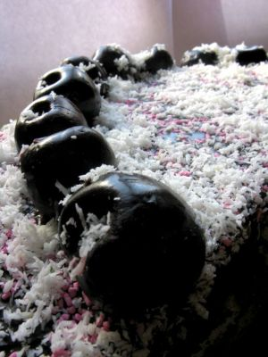

Torta ajedrez con ganache de chocolate y cosas varias
Desde que veo los programas de competencias de cocina me di cuenta que el describir el plato/comida está bien y no hace falta ponerle un nombre en especial. También, desde que veo esos programas, me dieron muuuchas ganas de empezar a sacar fotos a las comidas, lo malo es que no tengo ganas de preparar esas comidas super elaboradas para comer yo sola, ni conozco alguien que cocine de ese tipo cosa de pedirle un plato y sacarle fotos. Por esa razón, hice algo que sea rico por mas que sea visualmente feo, sin ganas, etc.: una linda torta.
Ya con el plato decidido, me decidi por cosas fáciles/que tenia ganas de hacer. El checkerboard cake tenia bastantes ganas de hacerlo desde que lo vi en "Cómo y por qué", un programa que lo pasaban en Discovery Kids, cuando era chica. La cubierta tenia pensada hacerla con crema, pero era mucho lio. Me decidí con el famosisimo ganache de chocolate que siempre escucho en los programas estos de cocina (menos en Hell's Kitchen). Decoración: lo primero que venga.
Pasos
Estos son, mas o menos, los pasos a seguir. Desde la preparación de la mezcla leyendo los pasos que vienen atrás de la caja, hasta la decoración. Si solo queres ver la torta final, scrollea hasta encontrar las fotos de una torta terminada
Bizcohuelo
Paso 1. Preparar los elementos que se necesitan por torta. Según tips en paginas webs, todo a temperatura ambiente. Prender el horno al minimo por 15 minutos.
Paso 2. Enmantecar y enharinar un molde.
Paso 3. En un recipiente, romper los huevos.
Agregar la leche y mezclarlos.
Paso 4. Agregar el contenido del envase.
Sacar el batidor que quedó enterrado
y mezclar los liquidos del paso anterior con el polvito.
Paso 5. Batir durante X minutos. Yo batí durante 10 porque no tengo
batidora electrica queria ejercitar la muñeca.

Paso 6.
Pasar la mezcla al molde y mandarlo el horno. Esperar como 1 hora. Durante esa hora: limpiar los elementos. El recipiente y espátula se pueden primero lamer:

Wanna lick it?
Paso 7. Después de la hora, hacer la prueba del palito seco para ver si la torta está lista (segun webs, se hace la prueba del palito DENTRO del horno. Asique cuidado). Una vez que ya está, sacarla del horno para que se enfríe.

Yo le clavé un cuchillo al principio.
Tip
Si se vive en una ciudad con viento, abrir la ventana y poner la torta al frente de la corriente de aire.
Paso 8. Empezar a desmoldar la torta. Yo tengo ese molde que se le saca primero los lados y después la base. Primero le saque los lados y la deje enfriar por otros 10-20 min.

Paso 9. Dar vuelta la torta y sacar la base. Dejar enfriar otros 10 min. Lavar y secar el molde poniendolo al lado de la ventana (cosa que se seque rapido ;) )
[imaginarse la torta dada vuelta al lado de la ventana]
Paso 10. Dar vuelta la torta, rogando que la parte de arriba no estuviera caliente y se haya pegado al plato (aunque no importa, después se cubre). Si no tienen estas rejillas para poner las tortas se puede agarrar (como hice yo) una tostadora no-automática-del-futuro ("vieja").

Cortesía de quien haya sacado la foto
Cada 10-15 min ir rotando la torta. De esta manera, se enfria tanto la parte de arriba y la de abajo.
Paso 11. Preparar los elementos para la segunda torta.
Paso 12. Enmantecar y enharinar de nuevo el molde.
Paso 13. Romper huevos y poner leche dentro de un recipiente. Mezclarlos.
Paso 14. Poner el contenido del envase en el recipiente, desenterrar el batidor. Unir los elementos hasta que quede de cierta manera para que se pueda batir.
Paso 15. Batir durante X minutos. Esta vez batí con la otra muñeca cosa de que se ejerciten parejamente.

Paso 16. Poner la mezcla en el molde y mandarlo al horno. Para este punto, la torta 1 ya tendria que haber dado toda la vuelta y estar mediamente enfriada en la parte de arriba. Darla vuelta para que se enfrie el centro de la parte de abajo/base.
Paso 17. Esperar otra hora. Mientras, se lavan los elementos.
Paso 18. Hacer la prueba del palito. Si esta, sacar la torta del horno, ponerla cerca de la ventana para que se enfrie. Apagar el horno. Si la base de la torta 1 esta "bastante" enfriada, darla vuelta para que se termine de enfriar la parte de arriba.
Paso 19. Después de unos 10 minutos, sacarle los costados de la torta 2. Seguir esperando a que se enfrie.
Paso 20. Darla vuelta y sacarle el molde de la base. Dejar que se enfrie. Lavar el molde.
Paso 21. Darla vuelta de nuevo rogando que la parte de arriba no estuviera caliente para que no se pegue. Dejar que se enfrie.
Paso 22. Dejar que torta 1 y torta 2 se conozcan y amiguen.
Paso 23. Dejar que se enfrien ambas tortas completamente.
Cortado
Paso 24. Una vez que las tortas esten enfriadas completamente, se procede a cortar. Primero se cortan por la mitad. Tengan buen ojo y corten bien, si no les queda una parte mas fina que la otra y queda mal. Esta torta queda mejor con pedazos mas altos, no como las que me salieron a mi que tienen como 2-4cm.
[imaginarse una foto viendo la torta de frente. El cuchillo ya habria cortado unos 2 cm de torta.]
Paso 25. Cortar los circulos. Si no se tienen los moldes,
buscar platos, tappers envases plásticos, vasos, etc. Con 2
elementos alcanzan. Tienen que ser unos 3cm (o a gusto del pastelero)
más chicos entre si (contando el de la torta). Se los centra y corta.

La otra parte mitad de la torta de chocolate se fue a dar un paseo
Pro tip
Apilar todos los bizcochuelos. Buscar el mismo cuchillo que se usó para cortar las tortas por la mitad. Ir poniendo y cortando con los elementos. Asi, en un paso, cortaste todas las tortas quedando mas o menos iguales.
Ganache
Paso 26. Armar el ganache de chocolate. Para hacerlo, se necesitan la misma cantidad de crema de leche y chocolate (ese para reposteria, taza/submarino). Para mi torta use 200gr de chocolate y unos 200 ml de crema aprox. El chocolate se corta bien chico (mas o menos) o se ralla, y se lo pone en un envase
[imaginarse el chocolate cortado en un envase]
Después se calienta la crema hasta antes de que hierva (o lo mandas al microondas por unos 30 segs a máximo). Poner la crema caliente en el envase con el chocolate suavemente (o sea, no a lo bruto). Esperar a que se disuelva, mas o menos, el chocolate. Seguidamente, se lo mezcla hasta que el chocolate esté completamente disuelto y mezclado con la crema. Tiene que tener un color a chocolate medio aterciopelado y brilloso.

Antes de usar el ganache, hay que dejar que se enfrie. Ponerlo en la heladera es buena opción.
"Relleno"
Paso 27. Armar el relleno para unir/darle sabor entre las capas. Puede ser dulce de leche, crema con cosas, ganache, etc. Yo hice una crema de dulce de leche que me dijeron por twitter. Es como ganache de chocolate pero con dulce de leche. Solo que éste no se solidifica (o lo hice mal... o no proporcioné bien), pero se puede poner gelatina sin sabor (pero yo no tenia).
Armado
Paso 28. Empezar a armar. Se pone el anillo exterior de X color, después se alterna con el de otro color, terminando con el centro del primer color.
Paso 29. Ponerle el relleno. No hay que ponerle mucho, ya que lo que importa de esta torta es el tablero de ajedrez y no el relleno.
Paso 30. Repetir el paso 28 pero alternando los colores. Si la primer capa fue chocolate-vainilla-chocolate, la segunda seria vainilla-chocolate-vainilla.
Paso 31. Repetir paso 29.
Pasos 32,33,34,35... Repetir pasos 28 y 29 hasta terminar.
Paso 36. Una vez que el ganache no esté tan líquido (cosa de que se pueda usar para cubrir) cubrir la torta con el ganache. Empezar con la parte de arriba. Opción: poner mucho ganache sobre los costados y empujarlo con la espatula para que se chorree :B. Cuidado que se hace mucho lio asique tengan algo para limpiar a mano (o laman la mesada).
[imaginar la torta con la parte de arriba cubierta y los costados chorreados con ganache]
Paso 37. Con la torta cubierta y con el ganache no solidificado, se procede con la decoración. Yo le espolvoreé estas cositas de colores que nunca me acuerdo como se llaman. Le puse las cerezas y terminé espolvoreando las cerezas con coco... aunque termine espolvoreando toda la parte de arriba.
Paso 38. A la heladera, para que el ganache se solidifique mas (seguro que con el ganache semi-solidificado esto no pasa)
Paso 40. COMER!
Resultado
Para recopensar todo este lio de pasos, muestro como quedo mi tortita.


Habia comprado rosa y verde, pero vinieron celestes




Esto pasa si no se corta bien... o aplasta bien

Hice lio :D
Espero que les haya gustado :)
“Paso 22. Dejar que torta 1 y torta 2 se conozcan y amiguen.” XDDD Son adictivos esos programas en TLC :mrgreen:.
¡Quedó muy bien! La próxima me tenés que invitar u.u
Cuando la haga de nuevo, mira. Van a pasar meses/años XD
Quedó muy buena. Casi me meto en un bucle infinito entre el paso 28 y 35, muchas repeticiones (?)
Lo único malo: El coco! Wacala!
El resto excelente, y las cositas esas de colores que no sabés cómo se llaman, acá se llaman granas de colores.
quiero una torta asi !!!
No te gusta el coco?! pero… pero.. pero si queda como nevadito :( :P
Oh sisisi! granas de colores! creo que aca decia eso el paquetito. Gracias :D
Hacela, por eso puse los pasos =P (jaja)
Que trabajo copado que hiciste!! Te pasaste Ei Kiu! Me gusta el formato checkers y el ganache…nom nom nom. Felicitaciones!!! ^.^
Zarpado! Quiero torta :(